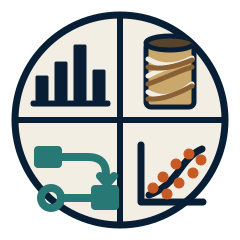

01
Geometallurgy
Ore characterisation, geometallurgical modelling, metallurgical response modelling and strategic integration.

CLAUSON GEOMETIndependent geometallurgical consulting combining orebody knowledge, mineral processing, statistics and reproducible data science.
01 / APPROACH
Turning complex geological and processing data into models, tools and decisions that are technically defensible and practically useful.
02 / SERVICES
Ore characterisation, geometallurgical modelling, metallurgical response modelling and strategic integration.
Bayesian modelling, uncertainty quantification, causal inference, experimental design and predictive analytics.
R and Python workflows, reproducible analysis and bespoke tools for technical and operational decision support.
03 / SELECTED WORK
04 / ABOUT
Clauson Geomet is an independent consultancy focused on the intersection of geology, mineral processing and applied statistics.
Work is built around transparent assumptions, defensible uncertainty and reproducible methods — with outputs designed to be useful to geologists, metallurgists, planners and decision-makers.
05 / CONTACT
Geometallurgy · Statistical modelling · Technical analytics